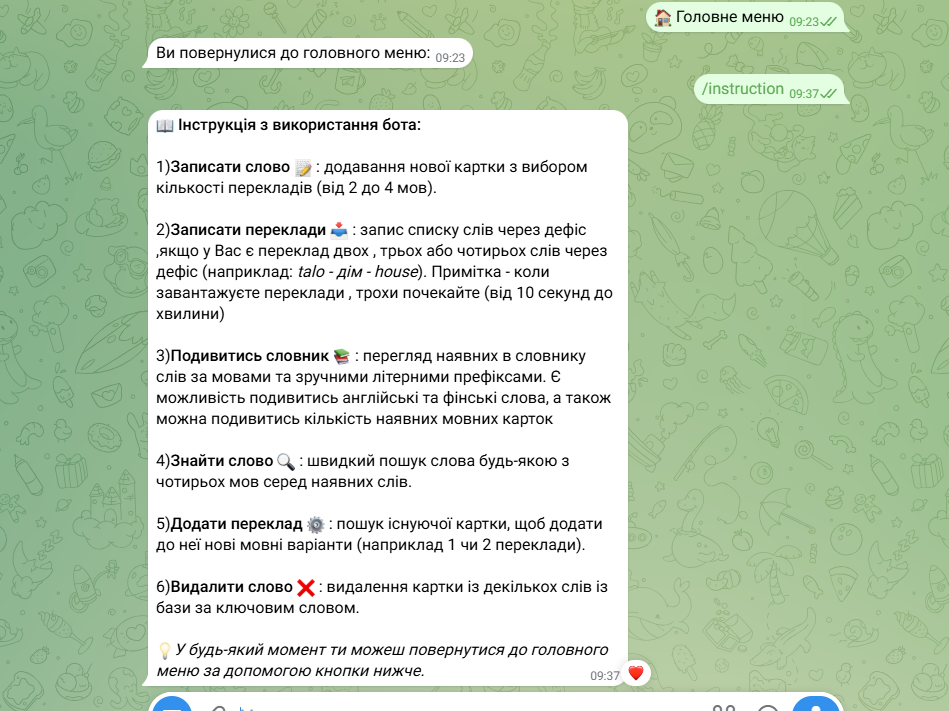
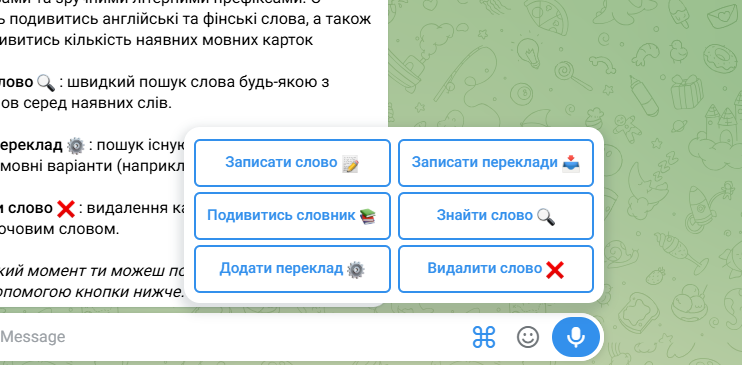
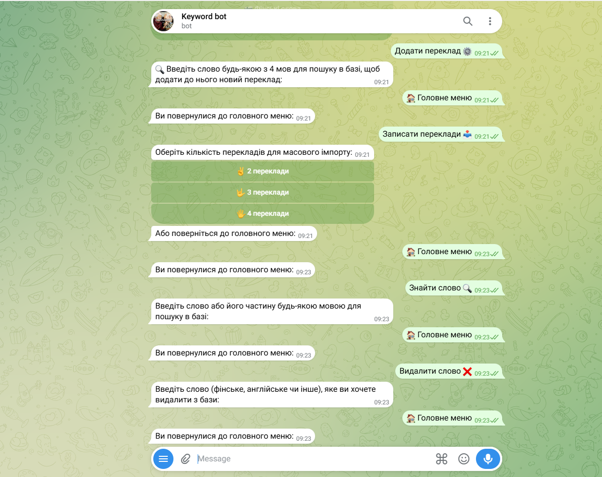

Mikä on Keyboard Bot?
Keyboard Bot on uusi ja tehokas Telegram-botti, joka auttaa sinua oppimaan uusia kieliä nopeasti ja vaivattomasti. Tämä botti on suunniteltu erityisesti tehokkaaseen sanaston harjoitteluun.
Botti toimii suoraan Telegram-viestisovelluksessa, joten et tarvitse erillisiä sovelluksia.




Käyttäjien kokemuksia
Sadat käyttäjät ovat jo parantaneet kielitaitoaan botin avulla. Tässä on yksi palaute:
"Tämä botti muutti tapani opiskella kieliä. Voin harjoitella sanoja missä ja milloin vain!" - Tyytyväinen opiskelija